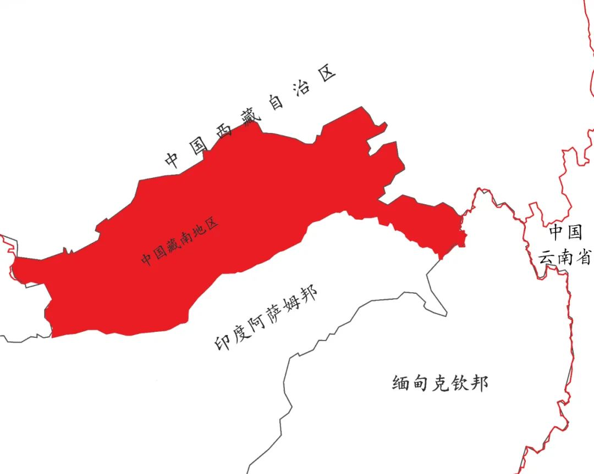
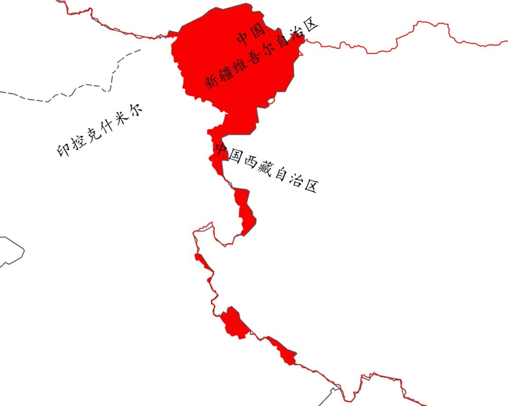
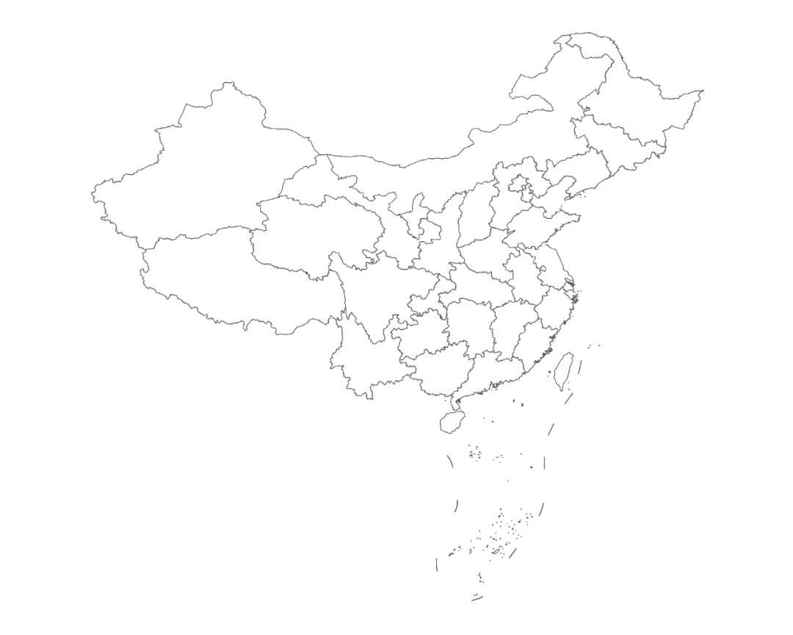
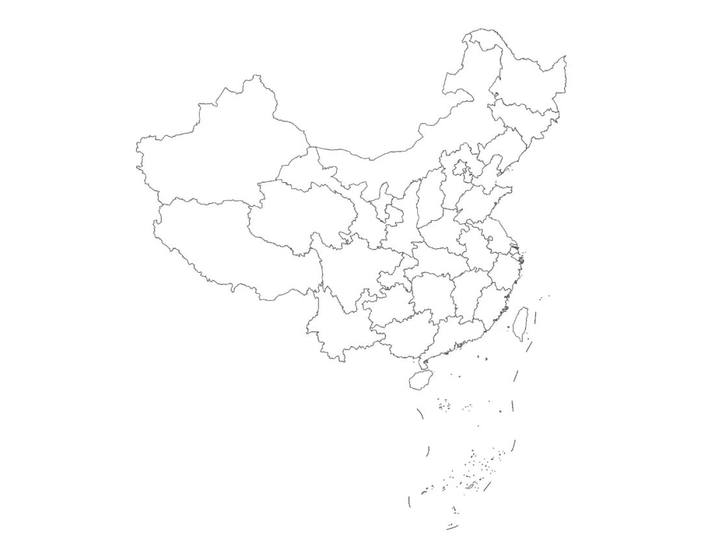
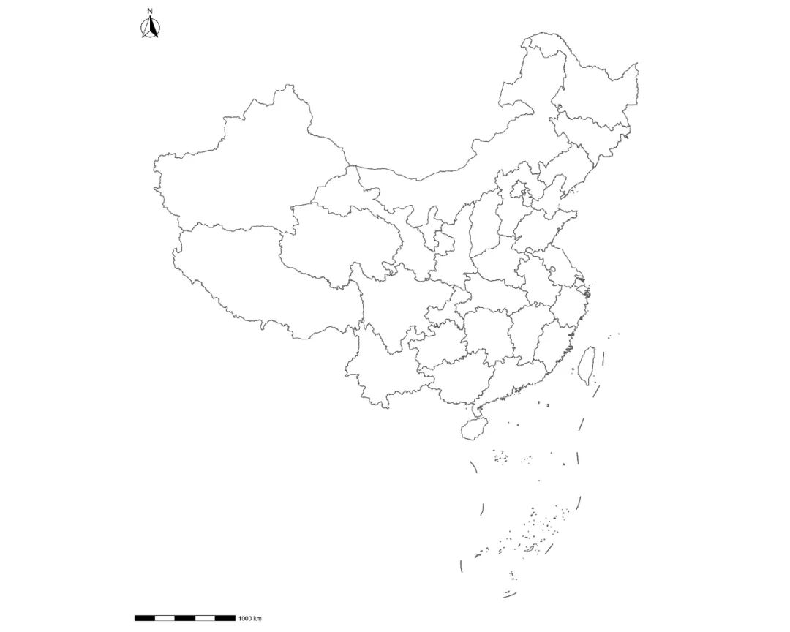
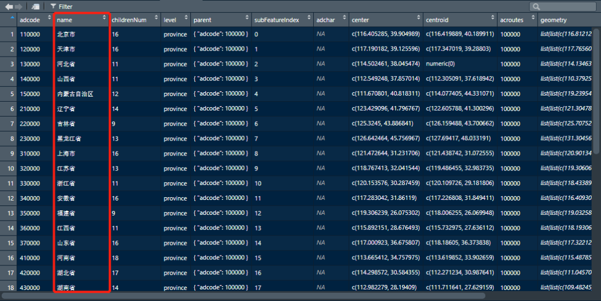
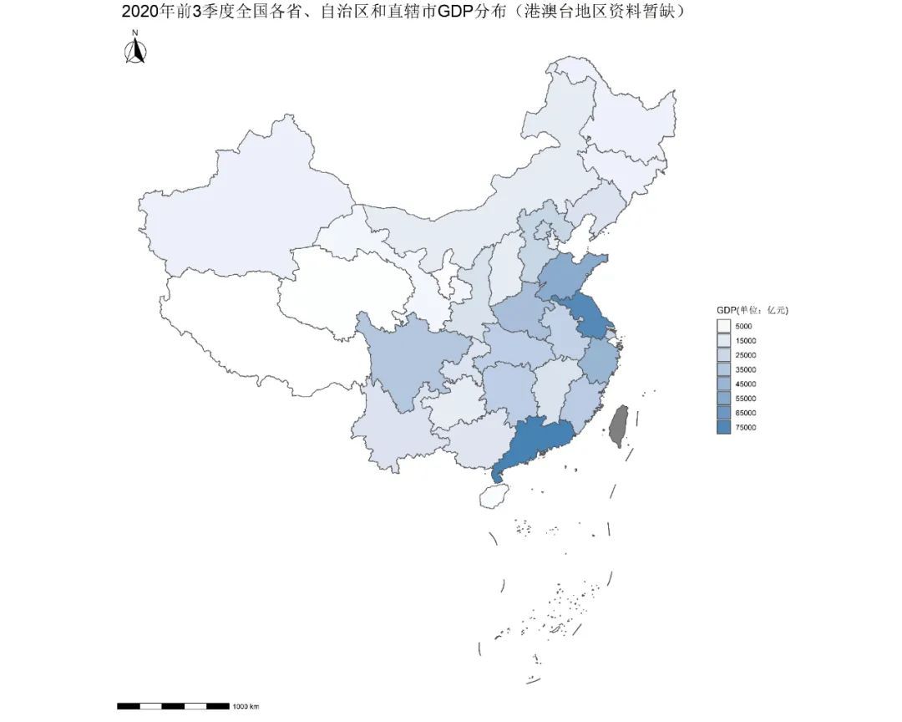
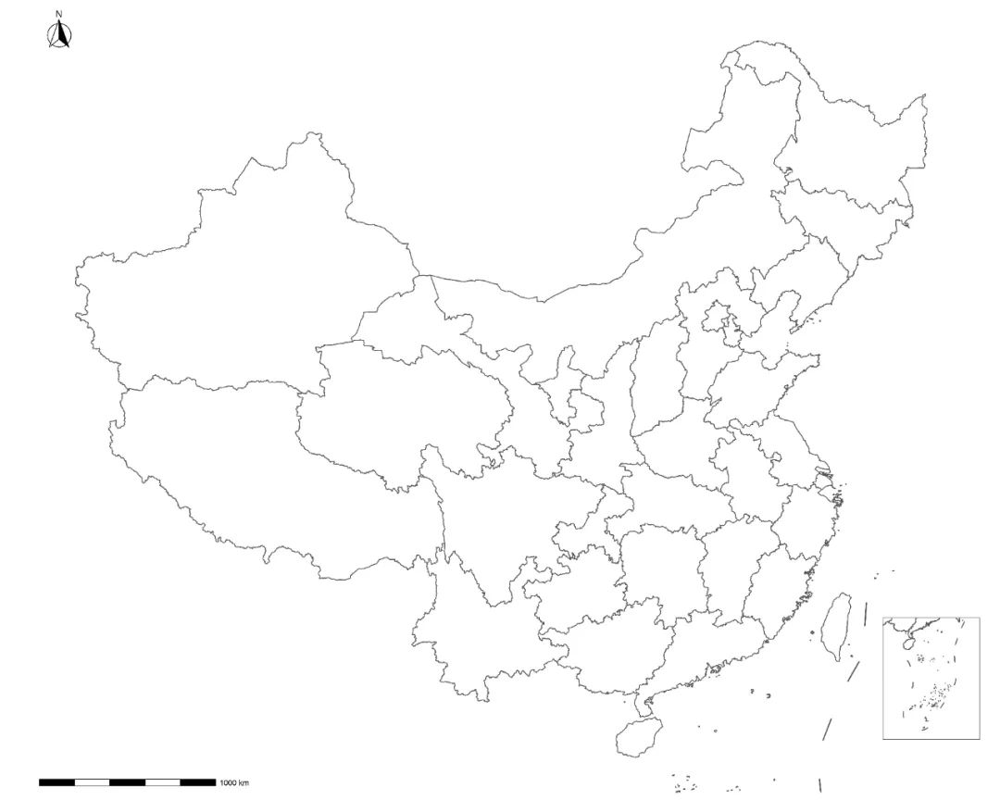
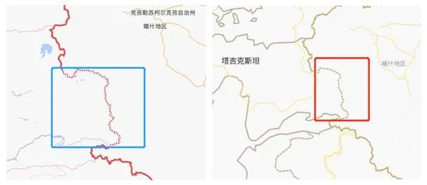

实用技术|如何用R绘制并填充相对正确的中国地图
收录于合集
#地图绘制 6 个
#数据可视化 15 个
#实用技术 19 个
标准地图象征着国家主权和领土完整。作为非地理信息专业但又要在研究过程中涉及地图绘制的政治学专业学生，我们必须在绘制中国地图并用作公开学术发表/出版时格外注意。诚然与需要付费才能使用的地理信息软件ArcGIS相比，免费、开源的R软件结合相对强大的tidyverse和sf等包在处理一些地理信息数据的可视化时可以不落下风，但是由于现有可供R软件读取的很多地图json/shp文件都由外国作者创作，因此在涉及中国边界的绘制过程中经常会有意无意的出现错绘、漏绘的情况。
我们曾经在《实用技术 | 如何用R绘制并填充相对正确的世界地图》一文里提过上述问题。为了进一步说明这一问题，下面我们读取了国际上比较流行的地图json/shp文件，列出了其中一些涉及中国地图边界绘制时容易出现的典型错误以供大家参考（在此需要澄清的是，我们读取的世界地图和中国地图的json/shp文件在绘制过程中出现了“咬合分离”的现象——共享边不一致、线条交错，这是由于每个区域单独描边所致，它们本身并不是存在所谓“主权争议”的地区）。
具体来说，图1所示的红色区域是中国的藏南地区（行政上分别隶属西藏自治区山南市错那县、隆子县以及林芝市墨脱县、察隅县），它经常被按照非法的“麦克马洪线”而错误地划入印度当局设立的所谓“阿鲁纳恰尔邦”中。

图1
图2中自上向下的几块红色区域依次为中国的阿克赛钦地区、巴里加斯地区、巨哇、曲惹地区、什布奇山口、桑、葱莎、波林三多地区以及乌热、然冲、拉不底地区），其中位于中国新疆和西藏交界的阿克赛钦地区经常被错误地绘入印度当局设立的所谓“拉达克中央直辖区”（原印度宣称的查谟和克什米尔地区东部）中。

图2
此外还有的地图json/shp文件本身未遵循“一个中国”原则（经读取文件或随机给地图上色可见）、未包含南海诸岛等等。因此，如果在绘制地图时没有注意到这些细节，那么在国内提交发表或出版前可能会遇到审读不通过进而被删除甚至退稿的问题，在国际上发表则可能会对国家主权和领土完整造成伤害，此外还可能日后给作者本人带来不便。
相反，只要有相对正确的地图json/shp文件，我们就可以利用其绘制相对正确的中国地图。因此，本期实用技术贴的目标主要是两个，第一是用R读取并绘制相对正确的中国地图，它是前提和基础；第二是按照某种指标给相对正确的中国地图填充颜色，进行可视化。具体步骤如下：
首先我们打开R，在工作路径中载入tidyverse和sf两个包，然后再读取相对正确的中国地图json文件：
library(tidyverse)library(sf)China <- st_read("China.json")
值得说明的是，本文使用的地图底图虽然来自高德地图的开放平台（链接http://datav.aliyun.com/tools/atlas/#&lat=30.334491405102664&lng=106.72420352760892&zoom=3.5），但是其边界并无明显问题，而且自带南海诸岛、钓鱼岛及其附属岛屿，无需额外添加南海诸岛和九段线图层。同时该平台提供的是json格式的地图，如果读者对json格式的文件不熟悉，也可以通过MyGeodata Converter网站将其在线转换成shp格式的文件再使用（链接：https://mygeodata.cloud/converter/json-to- shp）。
接下来是绘制中国地图全图并保存为图3：
ggplot() + geom_sf(data = China, colour = "#525252", fill = "white")+ theme(panel.grid = element_blank(), panel.background = element_blank(), axis.text = element_blank(), axis.ticks = element_blank(), axis.title = element_blank())ggsave("图3.jpg", dpi = 500, width = 15, height = 12)
 图3
在地图生成后，我们会发现它和国内媒体通常使用的地图形状有些差异，看起来比较扁，这其实是因为投影不同而造成的。对此我们可以将默认的投影方式改为兰伯特正方位等积投影（Lambert azimuthal equal-area projection）并保存为图4即可：
ggplot() +geom_sf(data = China, colour = "#525252", fill = "white")+coord_sf(crs = "+ proj = laea + lat_0 = 40 + lon_0 = 104")+theme(panel.grid = element_blank(), panel.background = element_blank(), axis.text = element_blank(), axis.ticks = element_blank(), axis.title = element_blank())ggsave("图4.jpg", dpi = 500, width = 15, height = 12)
 图4
我们还可以通过加载ggspatial包来补充地图中的指北针和比例尺：
#加载ggspatial包library(ggspatial) ggplot() + geom_sf(data = China, colour = "#525252",fill = "white")+ coord_sf(crs = "+ proj = laea + lat_0 = 40 + lon_0 = 104")+ annotation_scale(location = "bl") + annotation_north_arrow(location = "tl", which_north = "false", style = north_arrow_fancy_orienteering)+ theme(panel.grid = element_blank(), panel.background = element_blank(), axis.text = element_blank(), axis.ticks = element_blank(), axis.title = element_blank())# 保存为图5ggsave("图5.jpg", dpi = 500, width = 15, height = 12)
 图5
至此，本文的第一个目标——用R读取并绘制相对正确的中国地图全图已经完成了。那么如何按照某种给定的指标给中国地图上色进而实现可视化的效果呢？
接下来我们以2020年前3季度各省、自治区、直辖市GDP为例进行绘制，我们首先载入GDP数据：
GDP <- read.csv("ChineseGDP.csv", header=T, as.is=T)
我们可以看到原来中国地图json文件中有个包含各省、自治区和直辖市名称的name字段（如图6所示）：

图6
我们将其与GDP表中的name字段进行合并：
ChinaGDP <- left_join(China, GDP, by = "name")
然后再行绘制并添加相应的标题和图例即可：
ggplot() + geom_sf(data = ChinaGDP, aes(fill = GDP),colour = "#525252")+ scale_fill_gradient(low = "white", high = "steelblue", breaks = seq(5000, 80000, by = 10000))+ annotation_scale(location = "bl") + coord_sf(crs = "+ proj = laea + lat_0 = 40 + lon_0 = 104")+ annotation_north_arrow(location = "tl", which_north = "false", style = north_arrow_fancy_orienteering)+ ggtitle("2020年前3季度全国各省、自治区和直辖市GDP（港澳台资料暂缺）")+ guides(fill = guide_legend(title = 'GDP(单位：亿元)'))+ theme(panel.grid = element_blank(), panel.background = element_blank(), axis.text = element_blank(), axis.ticks = element_blank(), axis.title = element_blank(), plot.title = element_text(size = 12, hjust = 0.5,vjust = 1))# 保存为图7ggsave("图7.jpg", dpi = 500, width = 15, height = 12)

图7
到此，我们的第二个目标也完成了。当然，上面输出的各种中国地图虽然比较完整，但是由于中国南北纬跨度极大，因此生成的图片也相应比较大。为了投稿时的版面考虑，我们可以利用cowplot包将南海诸岛作为附图插入大图当中（如图8所示），以下是代码：
# 载入cowplot包library(cowplot)# 绘制中国地图大图ChinaMap <- ggplot() + geom_sf(data = China, colour = "#525252", fill = "white")+ coord_sf(ylim = c(-2387082,1654989), crs = "+proj=laea +lat_0=40 +lon_0=104")+ annotation_scale(location = "bl") + annotation_north_arrow(location = "tl", which_north = "false", style = north_arrow_fancy_orienteering)+ theme(panel.grid = element_blank(), panel.background = element_blank(), axis.text = element_blank(), axis.ticks = element_blank(), axis.title = element_blank())# 绘制南海诸岛附图SouthChinaSea <- ggplot() + geom_sf(data = China, colour = "#525252", fill="white")+ coord_sf(xlim = c(117131.4,2115095), ylim = c(-4028017,-1877844), crs = "+ proj = laea + lat_0 = 40 +lon_0 = 104")+ theme(aspect.ratio = 1.25, axis.text = element_blank(), axis.ticks = element_blank(), axis.title = element_blank(), panel.grid = element_blank(), panel.background = element_blank(), panel.border = element_rect(fill = NA, colour = "#525252"), plot.margin = unit(c(0,0,0,0),"mm"))# 将南海诸岛附图插入中国地图大图ggdraw() + draw_plot(ChinaMap) + draw_plot(SouthChinaSea, x = 0.88, y = 0.00, width = 0.1, height = 0.3)# 保存为图8ggsave("图8.jpg", dpi = 500, width = 15, height = 12)

图8
但是到这一步切记不要以为大功告成了，正如我们在文章标题中指出的那样，目前由R绘制出来的中国地图只是相对正确的地图，因为在一些细节地方仍然需要修改。参照已经公开出版的地图我们可以发现，尽管中国与塔吉克斯坦已完成划界工作，但是其交界处（新疆维吾尔自治区阿克陶县和塔什库尔干塔吉克自治县）仍然应以未定国界线表示，如图9所示：

图9
因此，这就需要在用R生成高分辨率（DPI）的图片之后再用诸如Adobe Illustrator、Photoshop之类的专业图片处理软件做进一步修改了。此外，对于以上代码中的各项指标设定，读者也可以根据需要自行设定。
值得强调的是，尽管本文使用的地图底图文件相对正确，但是根据现行《测绘法》和《地图管理条例》的有关规定，凡涉及中国地图和世界地图的出版物在出版前必须送审，经审读通过配发审图号后才可出版。因此大家如果要在国内的学术出版物中发表、出版涉及有关中国或世界地图的论文和专著，大概率会被送审，通过之后才能出版。但如果是中国籍学者要在国际会议或者国际期刊上发表，虽然不会受到国内有关地图审核程序的约束，但也请注意一定要使用相对正确的中国地图。
最后，本文使用的素材均已打包上传到网盘中（代码中保存图片的文件名称和本文不完全一致），感兴趣的读者可以扫描下方二维码下载复验。
未来我们还将陆续推出其他有关地图绘制的实用技术贴，欢迎各位读者朋友继续关注、支持我们。
参考文献：
[1] 姜晓东：《R 绘制中国地图，并展示流行病学数据》，https://cosx.org/2014/08/r-maps-for-china/
[2] 陆兵：《编辑地图插图应注意的重点问题》
[3] 宁海涛：《R-ggplot2 标准中国地图制作》，https://mp.weixin.qq.com/s/abKW8WwFUS39tXXRI1hNww
[4] Pauke:《Quick Note: sf + ggplot2 最简步骤实现中国地图数据展示》， https://blog.csdn.net/u014531714/article/details/85623130
[5] 《中华人民共和国国务院公报》1962年第12号，http://www.gov.cn/gongbao/shuju/1962/gwyb196212.pdf
撰文：杨端程 审读：陆屹洲 编辑：康张城